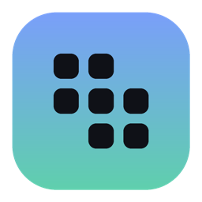

Scaffold
Reminders, pop-ups and focus locks for people with ADHD. Habits, tasks, projects and your calendar, synced across your phone and computers.
Older Mac with an Intel chip? Download the Intel version
Checking the current version…
How to install
📱 Android
- Tap Android above and download the file.
- Open it. If Android asks, allow your browser to install apps.
- Open Scaffold and follow the setup.
🪟 Windows
- Click Windows above and download the file.
- Unzip it, then open Scaffold.exe. If Windows warns you, click More info → Run anyway.
- Follow the setup.
🍎 Mac
- Click Mac above and download the file.
- Unzip it and drag Scaffold into Applications. Open it. If macOS blocks it, go to System Settings → Privacy & Security and click Open Anyway.
- Follow the setup.
Your data
Scaffold has no accounts and no ads. Your data lives on your own devices and travels between them end-to-end encrypted. If you connect Google Calendar, Scaffold uses it only to show and sync your own events. Details in the privacy policy.